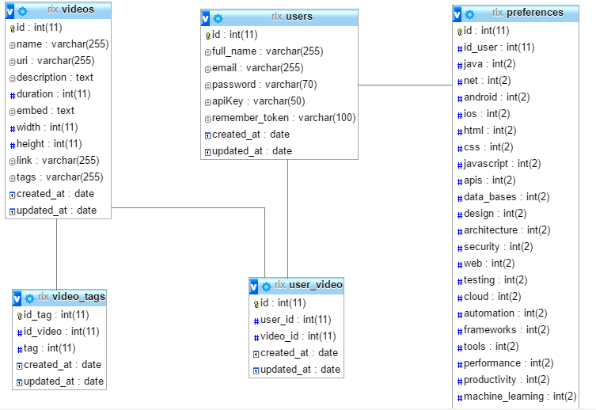

Resource Interactive eXplorer
Introducere
Numele aplicatiei ce urmeaza sa o dezvoltam este Resource Interactive eXplorer, ce urmareste a fi un instrument Web de colectare, de regasire si de vizualizare a informatiilor referitoare la resurse stiintifice si/sau tehnologice (videori, prezentari) ale utilizatorilor din domeniul informaticii.
Dezvoltand o aplicatie de tip mash-up, se vor oferi informatii de interes pentru o anumita persoana, pornind de la resursele multimedia deja colectate si clasificate (eventual, prin tagging) via aplicatii Web sociale precum Feedly, GitHub, Google Scholar, Lynrd, Pocket, Slideshare, Vimeo etc. Informatiile (structurate pe diverse criterii) vor fi vizualizate/redate in formate precum HTML, SVG sau text obisnuit. De asemenea, sistemul va oferi acces la informatii prin intermediul unui API REST.
Prezentare generala a aplicatiei
Aplicatia va fi usor de utilizat deoarece functionalitatile sale de baza vor permite utilizatorilor sa aiba acces la informatii utile si personalizate. Interfata propusa se doreste a fi atat atractiva, cat si discreta, pentru ca focusul utilizatorului sa fie mentinut pe continut.
Prima pagina a aplicatiei va permite oricarui utilizator sa vizualizeze stirile oferite de API-urile alese, insa fara posibilitatea de a le filtra. Pentru a putea vizualiza doar stiri din subdomeniile preferate, un utilizator va trebui sa isi creeze un cont, dupa care, accesand sectiunea My Favorites din meniu, si apoi sectiunea Add New Preferences se va declansa afisarea unui modal ce contine o lista de sub-domenii ale informaticii, cum ar fi Android Development, IOs Development, Software testing, Design etc.
Atunci cand este inregistrat, un utilizator isi va putea modifica preferintele in legatura cu subdomeniile preferate. De asemenea, va putea mentine o arhiva a stirilor preferate, apasand butonul de "Like" aflat sub fiecare stire. Pentru a mentine si a reaccesa un istoric al video-urilor preferate, utilizatorul va accesa sectiunea My Favorites din meniu si apoi sectiunea My Prefered News, ce va declansa afisarea unui modal ce contine acele video-uri. Pentru a pune pune la dispozitie aceste video-uri si prezentari, am extras date de pe API-uri.
Prezentarea interfetei aplicatiei
Prima pagina a aplicatie contine meniul format din logo, referinta catre sectiunea "About Us", referinta catre sectiunea "Contact" si un buton de logare. Daca un utilizator nu are cont, acesta poate accesa butonul de “Login” si va declansa deschiderea modalului de logare, dupa care va apasa butonul de "Sign up" si va declansa deschiderea celui de al doilea modal, pentru completarea datelor personale.
Dupa logarea cu succes, utilizatorul va fi directionat pe o pagina unde va avea acces la informatii personalizate. Meniul acestei pagini contine in plus sectiunea "My Favorites", ce permite accesarea a doua butoane, Add New Preferences si My Prefered News. Pentru a realiza acest lucru, am folosit functionalitatea oferita de framework-ul Laravel: @if (Auth::check()) {...} @else {...} @endif.
Daca un utilizator doreste sa acceseze o stire din cele prezentate pe aceasta pagina, acesta va fi directionat pe o pagina ce va contine stirea in intregime.
Aplicatia contine si un camp de "Search" care ofera posibilitatea utilizatorului de a cauta un video dupa preferintele lui.
In aplicatia noastra, vom folosi pentru implementare, framework-ul Laravel. Am ales acest framework deoarece ne ofera o documentatie oficiala foarte bogata si cel mai important, deoarece ne permite sa implementam aplicatia dupa modelul arhitectural MVC. Laravel are numeroase functionalitati care-l transforma intr-un framework extrem de puternic:
- Are Facades(clase ale caror metode pot fi apelate ca si metode statice, ex: Route::get(), Input::get(), Input::all() si multe altele).
- Are ORM(Object Relational Mapping), deci poti transforma $articole = DB::table('articole')->get(); in $articole = Articol::all();. Un ORM ofera numeroase functionalitati ce-ti confera un control imens asupra aplicatiei.
Arhitectura aplicatiei
Etapele intermediare ale dezvoltării proiectului
API (Application Program Interface) este un set de protocoale și instrumente pentru crearea de aplicații software. Un API specifică modul în care componentele software ar trebui să interacționeze, astfel un API bun ne ajută să dezvoltăm mai ușor aplicația prin furnizarea altor elemente software. Trebuie sã cunoaștem adresa URL a furnizorului de servicii și metodele prin care avem acces la serviciul oferit (nume, parametri, rezultat). Interfața API este limitatã la câteva operații în cazul serviciilor de tip REST.
Pentru a pune pune la dispozitie aceste video-uri si prezentari, am extras date de pe API-urile oferite de Vimeo, YoutTube si Slideshare.
Pentru a putea colecta video-uri de pe Vimeo si a le introduce in baza de date, trebuie facut apelul “'/secret/getVimeoVideos'” care apeleaza functia getVimeo() prezentata in VideoController ce parseaza un Json si introduce in baza de date campurile: name, description, duration, uri, embed, width, height, tags.
Pentru a colecta informații disponibile pe SlideShare vom utiliza următoarele metode API:
- Slideshow Search URL: https://www.slideshare.net/api/2/search_slideshows. Acesta este utilizat pentru a obtine informatii despre prezentari.
- Get Slideshows By Tag URL: https://www.slideshare.net/api/2/get_slideshows_by_tag. Acesta este utilizat pentru a obtine prezentari pe baza search-ului prezent pe slideshare.
Parametri necesari
-q: the query string
Parametri necesari
-tag: Parametru ce specifica numele tag-ului prezentarii respective.
In aplicatia noastra vom include si API-ul oferit de Youtube pentru incarcarea clipurilor video, a canalelor existente pe aceasta platforma si a play-listurilor,daca exista, precum si pentru cautarea acestora.
Am realizat o cerere catre Google pentru a ne ofera cheia pentru API-ul Youtube. Apoi vom face o cerere HTTP, apeland GET la URL-ul https://www.googleapis.com/youtube/v3/videos pentru a obtine video-uri. La fel si pentru celelalte elemente care le dorim extrase de pe Youtube.
Parametri necesari
-part: returneaza o lista cu proprietatile resursei video, separate prin virgula.
-regionCode: returneaza rezultatele in functie de tara
-maxResults: specifica numarul de rezultate care vor fi returnate
-q: reprezinta interogarea ce va fi executata pentru cautare
-order: specifica metoda ce va fi folosita pentru ordonarea rezultatelor
-channelId: specifica API-ului ca rezultatele returnate trebuie sa apartina canalului
-pageToken: specifica o anumita pagina ce trebuie returnata
Deasemenea oferim o cautare a infomatiilor dupa nume, in campul Search, aplelandu-se functiei search() din PageController. Aceasta functie foloseste metoda $_GET pentru a prelua numele dupa care utilizatorul realizeaza cautarea.
Baza de date
Pentru stocarea datelor in cadrul aplicatiei vom folosi ca suport sistemul de gestiune MySQL incorporate in cadrul aplicatiei phpMyAdmin. Acest sistem de gestiune contine extensia MySQLi, ce impreuna cu PHP 5, ofera o serie de functii ce ajuta la accesarea facila bazelor de date.
Baza de date va stoca date precum: datele de inregistrare a administratorilor, ale utilizatorilor aplicatiei si date optionale, alese de utilizatori la inregistrarea in aplicatie. Aceste date vor fi retinute intr-o tabela Users, ce va contine campuri precum : id ( cheie unica asignat automat fiecarui utilizator), nume, email si parola ( date ce sunt completate de utilizator la inregistrarea in aplicatie).
De asemenea, intr-o alta tabela Preferinte vor fi retinute preferintele care pot fi alese de fiecare utilizator la inregistrarea in aplicatie. Aceasta a doua tabela va retine numele domeniilor impreuna cu id-ul utilizatorului care l-a ales(cheie straina din tabela Users) . Astfel un utilizator isi va putea accesa cu usurinta lista cu preferinte alese si va mai putea adauga si altele.
Intr-o alta tabela, User_video, vor fi retinute efectiv preferintele utilizitarilor prin salvarea id-urilor userilor si a video-urilor favorite.
Tabelul Videos va retine fiecare video salvat, prin stocarea id-ului sau, nume, url, descriere, durata, tag-uri si alte optiuni preluate prin intermediul API-ului. Toate tag-urile de la toate video-urile preluate in aplicatie, vor fi deasemenea salvate intr-un table Video_tags, ce va retine pentru fiecare tag unic, id-ul si id-ul video-ului.
Membrii echipei
Ana Cretu s-a ocupat de obtinerea video-urilor de pe API-ul oferit de YouTube si de sistemul de logare.
Diana Gusa s-a ocupat de crearea sectiunii de search si de crearea API-ului REST.
Madalina Iacob s-a ocupat de sistemul de gestionare a preferintelor a unui utilizator si de obtinerea video-urilor de pe API-ul oferit de Slideshare.
Georgiana Lingurariu s-a ocupat de structura interfetei aplicatiei si de obtinerea video-urilor de pe API-ul oferit de Vimeo.